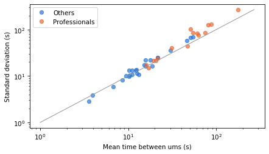
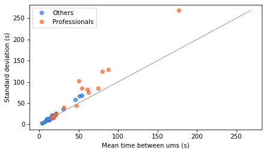
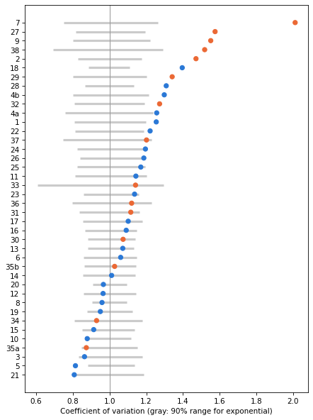
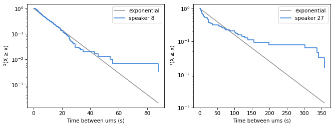
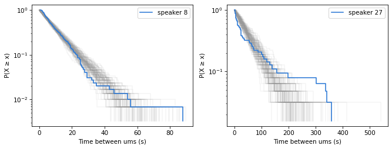
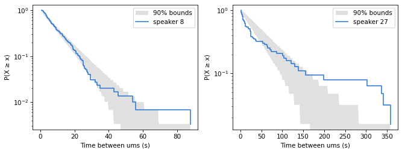
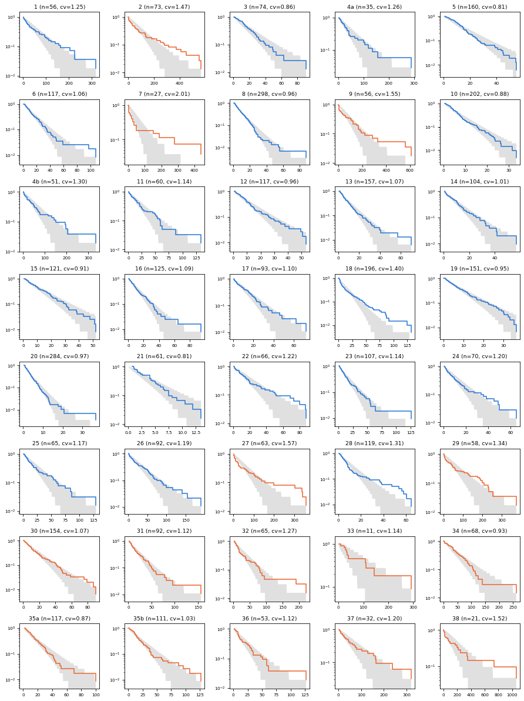
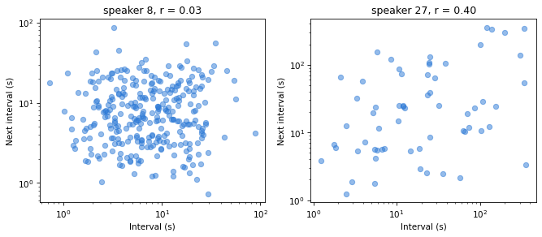
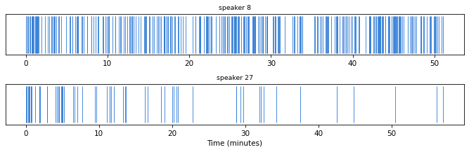

Do People Um at Random?#
In May 2023, a YouTuber called Not David posted a video called “I Found a Weird Pattern in How People `UHMMM’”, which has been watched more than a million times. Here’s the story: as a PhD student, bored at a conference, he wrote a program that recorded the time between clicks, and he clicked every time a speaker said “um”. Then he did the same for friends, for his own talks, and for science communicators on YouTube.
For each speaker, he computed the mean and standard deviation of the times between ums, and plotted one against the other. Here’s what he found:
Most speakers fall close to the line where the standard deviation equals the mean. That’s what we expect if ums are a Poisson process, so he concluded that ums arrive at random, independently of each other – “a window into how the brain works”.
Professional communicators have longer gaps between ums.
Some of the professionals are above the line: they “um like platoon buses”, with long stretches without ums, then bursts. The video attributes this to a difference in how practiced speakers string words together, citing their experience speaking off the cuff. In a comment on the video, Matt Parker, one of those speakers, offered a more specific theory: that he and Tom Scott switch between material they’ve presented many times and new material they’re talking about for the first time.
In Q&A sessions, where speakers can’t rehearse, the differences disappear, and “all statistical tests now suggest these are truly Poisson”.
I found the video because of a question on Reddit’s statistics forum, from someone who half-remembered it and asked where to find it.
The video raises a general question: if we think a process might be well modeled by a Poisson process, how can we check? The video uses one method; I’ll explain why it’s not the best one, and demonstrate some alternatives. Fortunately, Not David made his data public, so we can try them out.
Click here to run this notebook on Colab.
I’ll download a utilities module with some of my frequently-used functions, and then import the usual libraries.
The data#
The data are in a repository on GitHub. There’s one column for each of 40 talks, identified by number. The first row indicates whether the speaker is a professional communicator; the rest are the times between ums, in seconds, as recorded by the clicker. Two speakers were recorded twice (4a/4b and 35a/35b), and column 10 is Not David himself. A second file contains the times between ums during the Q&A sessions after 18 of the talks.
data_url = 'https://raw.githubusercontent.com/notDavidsGit/uhmmmsData/main/'
download(data_url + 'uhmms_publicVersion.csv')
download(data_url + 'uhmmsQ_public.csv');
raw = pd.read_csv('uhmms_publicVersion.csv')
professional = raw.loc[0].astype(bool)
# the lists have different lengths, padded with zeros
intervals = {
speaker: raw.loc[1:, speaker].replace(0, np.nan).dropna().to_numpy()
for speaker in raw.columns
}
len(intervals), sum(len(x) for x in intervals.values())
(40, 3982)
summary = pd.DataFrame({
"professional": professional,
"n": {s: len(x) for s, x in intervals.items()},
"mean": {s: x.mean() for s, x in intervals.items()},
"std": {s: x.std(ddof=1) for s, x in intervals.items()},
})
summary["cv"] = summary["std"] / summary["mean"]
summary.round(2).head()
| professional | n | mean | std | cv | |
|---|---|---|---|---|---|
| 1 | False | 56 | 54.38 | 68.21 | 1.25 |
| 2 | True | 73 | 88.08 | 129.54 | 1.47 |
| 3 | False | 74 | 18.64 | 16.10 | 0.86 |
| 4a | False | 35 | 46.09 | 57.92 | 1.26 |
| 5 | False | 160 | 13.17 | 10.72 | 0.81 |
There are 3,982 intervals in all, from 11 to 298 per talk.
Standard Deviation Versus Mean#
If events happen at a constant rate, \(\lambda\), independently of each other, they form a Poisson process. In that case, the number of events in any window follows a Poisson distribution, and the times between events follow an exponential distribution with mean \(1/\lambda\). The standard deviation of an exponential distribution equals its mean, which suggests a way to check whether the data are consistent with a Poisson process: a scatter plot of standard deviation versus mean.
Here’s my version of the plot shown in the video, with the mean and standard deviation for each talk on log-log axes, and the diagonal for reference.
def plot_mean_std(summary, **options):
for prof, color, label in [(False, BLUE, "Others"), (True, ORANGE, "Professionals")]:
rows = summary["professional"] == prof
plt.plot(summary.loc[rows, "mean"], summary.loc[rows, "std"], "o", color=color, alpha=0.7, label=label)
high = summary[["mean", "std"]].max().max()
plt.plot([1, high], [1, high], color=GRAY, lw=1)
decorate(xlabel="Mean time between ums (s)", ylabel="Standard deviation (s)", **options)
plot_mean_std(summary, xscale="log", yscale="log")

Consistent with conclusions in the the video, most points are close to the diagonal, and the professionals (orange) have longer gaps between ums, on average.
But on log-log axes, departures from the diagonal look small. If we plot the same data on linear axes, they are easier to see.
plot_mean_std(summary)

Several of the professionals are above the line, which means their intervals are more variable than an exponential distribution with the same mean. That’s one indication that the data might deviate from a Poisson model – but the real world is never perfect. So let’s see how much deviation we should expect by chance.
The coefficient of variation#
To summarize each speaker’s data, we’ll compute the ratio of the standard deviation to the mean, which is the coefficient of variation (CV).
For values from an exponential distribution, the CV should be 1, but in a finite sample we don’t expect it to be exactly 1. To see how much deviation we should expect, we’ll simulate exponential samples with the same samples sizes we see in the data.
rng = np.random.default_rng(17)
def cv_range(n, iters=1000):
samples = rng.exponential(size=(iters, n))
cvs = samples.std(axis=1, ddof=1) / samples.mean(axis=1)
return cvs
sims = {s: cv_range(n) for s, n in summary["n"].items()}
summary["cv 5%"] = [np.percentile(sims[s], 5) for s in summary.index]
summary["cv 95%"] = [np.percentile(sims[s], 95) for s in summary.index]
summary["p (cv high)"] = [(sims[s] >= summary.loc[s, "cv"]).mean() for s in summary.index]
ordered = summary.sort_values("cv")
ys = np.arange(len(ordered))
colors = np.where(ordered["professional"], ORANGE, BLUE)
plt.figure(figsize=(6, 8))
plt.hlines(ys, ordered["cv 5%"], ordered["cv 95%"], color=GRAY, lw=3, alpha=0.5)
plt.scatter(ordered["cv"], ys, color=colors, zorder=3)
plt.axvline(1, color=GRAY, lw=1)
plt.yticks(ys, ordered.index)
decorate(xlabel="Coefficient of variation (gray: 90% range for exponential)", legend=False)

For each speaker, the dot shows the CV and the gray line shows the range we’d expect from an exponential sample of the same size. Many CVs are within the range, but a substantial number are above it, and a few are below.
Here’s the number of speakers whose CV is higher than 95% of the simulated values, for non-professionals (False) and professionals (True).
summary.assign(high=summary["p (cv high)"] < 0.05).groupby("professional")["high"].agg(["sum", "count"])
| sum | count | |
|---|---|---|
| professional | ||
| False | 8 | 25 |
| True | 7 | 15 |
If all 40 talks came from exponential distributions, we’d expect about 2 of them to exceed this threshold by chance. In fact, 8 of 25 non-professionals and 7 of 15 professionals do. So the CVs suggest that the exponential model doesn’t fit many of the speakers, especially the professionals.
But the CV is not the best way to check, for several reasons:
It’s a single number, so it can’t tell us where a distribution departs from exponential, and a distribution can have a CV near 1 without being exponential.
It’s sensitive to the largest values, which are few and noisy.
It ignores the order of the intervals, so it can’t tell us whether they are independent.
A better way to check whether data fit a particular distribution is to plot the whole distribution.
Tail distributions on a log-y scale#
For some common distributions, there’s a way to transform the distribution so it appears as a straight line. For an exponential distribution, the probability of a value greater than or equal to \(x\) is
If we take the log of both sides, we get
So if we plot these probabilities on a log-y scale, the result should be a straight line with slope \(-\lambda\). Departures from a straight line are easy to see, and the shape of the departure tells us something. If the curve bends up on the right, there are more long gaps than an exponential distribution predicts; if it bends down, there are fewer.
To compute these probabilities, I’ll use a TailDist object from empiricaldist, which represents \(P(X \ge x)\).
To demonstrate the method, I’ll start with two speakers: speaker 8, who has a CV near 1 and a lot of data, and speaker 27, a professional with a high CV.
examples = ['8', '27']
summary.loc[examples].round(2)
| professional | n | mean | std | cv | cv 5% | cv 95% | p (cv high) | |
|---|---|---|---|---|---|---|---|---|
| 8 | False | 298 | 10.29 | 9.86 | 0.96 | 0.91 | 1.09 | 0.72 |
| 27 | True | 63 | 54.37 | 85.62 | 1.57 | 0.81 | 1.19 | 0.00 |
def plot_tail(x, **options):
tail = TailDist.from_seq(x)
tail.step(**options)
return tail
def plot_model(x, **options):
qs = np.linspace(0, x.max(), 201)
plt.plot(qs, expon(scale=x.mean()).sf(qs), color=GRAY, **options)
fig, axes = plt.subplots(1, 2, figsize=(9, 3.5))
for ax, speaker in zip(axes, examples):
plt.sca(ax)
x = intervals[speaker]
plot_model(x, label="exponential")
plot_tail(x, color=BLUE, label=f"speaker {speaker}")
decorate(xlabel="Time between ums (s)", ylabel="P(X ≥ x)", yscale="log")

The gray lines show exponential distributions with the same mean as the data. For speaker 8, the data follow the straight line closely, down to about \(10^{-1}\) on the y-axis, which means that it covers all but 10% of the data. After that, the data depart from the model. For speaker 27, the model doesn’t fit the data well.
But just looking at these figures, it’s not clear how much deviation from the exponential distribution we should expect.
How much variation should we expect?#
To decide whether a departure from the straight line is meaningful, we need to know how much a sample from an exponential distribution would vary by chance. The tail is where the variation is biggest, because it’s based on the fewest data points.
One way to find out is to simulate. The following function generates exponential samples with the same mean and size as the data, and plots their tail distributions.
def plot_simulated(x, iters=100):
for _ in range(iters):
sample = rng.exponential(x.mean(), len(x))
TailDist.from_seq(sample).step(color=GRAY, alpha=0.1, label="")
fig, axes = plt.subplots(1, 2, figsize=(9, 3.5))
for ax, speaker in zip(axes, examples):
plt.sca(ax)
x = intervals[speaker]
plot_simulated(x)
plot_tail(x, color=BLUE, label=f"speaker {speaker}")
decorate(xlabel="Time between ums (s)", ylabel="P(X ≥ x)", yscale="log")

The gray lines show 100 simulated samples. Speaker 8’s data are mostly inside the range of the simulations, but the longest interval is longer than in most of them. With 298 intervals and a mean of about 10 seconds, the chance of an interval as long as 88 seconds is only about 6%, so this is a little surprising, but not much evidence against the model. Speaker 27’s data are outside the range of the simulations, in both the short and long intervals.
Simulation is easy to understand, but it’s slow if we want to do it for all 40 talks, and the result is noisy. Instead we can compute analytically the interval we expect the distribution of the sample to fall in.
If the data are a sample of size \(n\) from an exponential distribution, the number of values greater than or equal to \(x\) follows a binomial distribution with parameters \(n\) and \(p = P(X \ge x)\). So we can use the binomial distribution to compute percentiles of the tail distribution at each \(x\).
This calculation makes a simplifying assumption: that the mean of the exponential distribution is known, and equal to the sample mean. In fact, we estimated it from the same data we’re checking. (The simulations in the previous section make the same assumption.) We’ll come back to the consequences of this assumption below.
def tail_bounds(x, con_level=0.9):
n = len(x)
qs = np.linspace(0, x.max(), 201)
ps = expon(scale=x.mean()).sf(qs)
alpha = (1 - con_level) / 2
low = TailDist(binom.ppf(alpha, n, ps) / n, qs)
high = TailDist(binom.ppf(1 - alpha, n, ps) / n, qs)
return low, high
def plot_bounds(x, **options):
low, high = tail_bounds(x)
plt.fill_between(low.qs, low.ps, high.ps, color=GRAY, alpha=0.3, lw=0, **options)
Here are the 90% bounds for the two example speakers.
fig, axes = plt.subplots(1, 2, figsize=(9, 3.5))
for ax, speaker in zip(axes, examples):
plt.sca(ax)
x = intervals[speaker]
plot_bounds(x, label="90% bounds")
plot_tail(x, color=BLUE, label=f"speaker {speaker}")
decorate(xlabel="Time between ums (s)", ylabel="P(X ≥ x)", yscale="log")

The bounds agree with the simulations: speaker 8 is consistent with an exponential distribution, except for the longest interval, and speaker 27 is not. Where the lower bound is 0, the shaded area extends to the bottom of the plot.
Because of the simplifying assumption, these bounds are approximate. The model is fitted to the data, so the data tend to be closer to it than a sample from a known distribution would be, which means the bounds are wider than they need to be. In simulations, a sample from an exponential distribution, compared with an exponential model that has the same mean as the sample, stays inside the bounds at almost every point, and the whole curve stays inside them about 60% to 80% of the time, depending on sample size. So the bounds are conservative: a brief excursion outside them is not much evidence against the model, but a long stretch outside, or a large departure, is.
All the speakers#
Now we can check all 40 talks. In the following figure, each panel shows one talk, with the professionals in orange. The title shows the label of the talk, the number of intervals, and the CV.
def plot_grid(intervals, summary, ncols=5):
nrows = int(np.ceil(len(intervals) / ncols))
fig, axes = plt.subplots(nrows, ncols, figsize=(12, 2 * nrows))
for ax, (speaker, x) in zip(axes.flat, intervals.items()):
plt.sca(ax)
plot_bounds(x)
color = ORANGE if summary.loc[speaker, "professional"] else BLUE
plot_tail(x, color=color)
ax.set_yscale("log")
ax.set_ylim(0.5 / len(x), 1.5)
ax.set_title(f"{speaker} (n={len(x)}, cv={summary.loc[speaker, 'cv']:.2f})", fontsize=9)
ax.tick_params(labelsize=7)
for ax in axes.flat[len(intervals):]:
ax.set_visible(False)
plt.tight_layout()
plot_grid(intervals, summary)

For many of the speakers, the data are inside the bounds, or close. For several, the tail is above the bounds, which means there are more long intervals than an exponential distribution predicts – including professionals 2, 7, 9, 27 and 29, and non-professionals 18 and 28. For a few speakers, including 5 and 21, the tail falls below the bounds on the right, which means there are fewer long intervals than expected.
Ways the data might deviate#
There are two ways the data might depart from a Poisson process: the intervals might come from a distribution other than exponential, or they might not be independent.
A distribution other than exponential can be over-dispersed or under-dispersed.
If it’s over-dispersed, there are more short intervals and more long intervals than in an exponential distribution, the CV is greater than 1, and the tail bends up. That’s the “platoon bus” pattern. It could happen if the rate of ums changes over the course of a talk, or if the speaker switches between modes.
If it’s under-dispersed, the intervals are more regular than random, like buses that run on schedule, the CV is less than 1, and the tail falls faster than a straight line. That could happen if there’s a minimum time between ums, or because of the reaction time of the person with the clicker.
In this dataset, over-dispersion is more common: 15 of 40 talks have CVs above the range we’d expect by chance, and only a few are below it.
The other possibility is that the intervals are not independent. In a Poisson process, the time until the next event doesn’t depend on the time since the last one. But if speakers switch between rehearsed and new material, as Matt Parker suggests, we expect short intervals to be followed by short intervals, and long by long. Neither the CV nor the tail distribution can detect this kind of dependence, because they ignore the order of the intervals.
Correlation between consecutive intervals#
To check for dependence, we can compute the serial correlation of the intervals – that is, the correlation between each interval and the next. Because the intervals are skewed, I’ll compute it using the logarithms of the intervals, so a few long intervals don’t dominate the result. To see whether a correlation is bigger than we’d expect by chance, we can shuffle the intervals, which destroys any dependence between them, and see how often the correlation of the shuffled data is as big as the actual correlation. Here are the median serial correlations for non-professionals and professionals.
def lag1_corr(x):
logs = np.log(x)
return np.corrcoef(logs[:-1], logs[1:])[0, 1]
def lag1_test(x, iters=1000):
actual = lag1_corr(x)
shuffled = [lag1_corr(rng.permutation(x)) for _ in range(iters)]
return actual, (np.array(shuffled) >= actual).mean()
results = {s: lag1_test(x) for s, x in intervals.items()}
summary["lag1"] = [results[s][0] for s in summary.index]
summary["p (lag1)"] = [results[s][1] for s in summary.index]
summary.groupby("professional")["lag1"].median()
professional
False 0.029668
True 0.145648
Name: lag1, dtype: float64
For non-professionals, the median is close to 0; for professionals, it’s about 0.15. And here’s the number of talks where the correlation is bigger than 95% of the shuffled correlations.
summary.assign(correlated=summary["p (lag1)"] < 0.05).groupby("professional")["correlated"].agg(["sum", "count"])
| sum | count | |
|---|---|---|
| professional | ||
| False | 1 | 25 |
| True | 7 | 15 |
By chance, we’d expect about 1 of 25 non-professionals and 1 of 15 professionals to exceed this threshold. For the non-professionals, the result is consistent with independence, but 7 of 15 professionals show evidence of positive correlation.
To see what that looks like, here are scatter plots of each interval and the next for the two example speakers, on log-log axes.
fig, axes = plt.subplots(1, 2, figsize=(9, 4))
for ax, speaker in zip(axes, examples):
plt.sca(ax)
x = intervals[speaker]
plt.plot(x[:-1], x[1:], "o", alpha=0.5, color=BLUE)
decorate(
xlabel="Interval (s)", ylabel="Next interval (s)", xscale="log", yscale="log",
title=f"speaker {speaker}, r = {lag1_corr(x):.2f}", legend=False,
)

For speaker 8, there’s no visible relationship. For speaker 27, there is: short intervals tend to be followed by short intervals, and long by long.
To see where that correlation comes from, here are the ums of the two speakers on a timeline.
fig, axes = plt.subplots(2, 1, figsize=(9, 3), sharex=False)
for ax, speaker in zip(axes, examples):
times = np.cumsum(intervals[speaker]) / 60
ax.vlines(times, 0, 1, color=BLUE, lw=0.8)
ax.set_yticks([])
ax.set_title(f"speaker {speaker}", fontsize=9)
axes[-1].set_xlabel("Time (minutes)")
plt.tight_layout()

Speaker 8’s ums are spread out over the whole talk, with no obvious pattern. Speaker 27’s ums are dense at the beginning of the talk and sparse at the end.
The following table summarizes the results for all 40 talks, sorted by CV.
summary.sort_values("cv", ascending=False).round(3)
| professional | n | mean | std | cv | cv 5% | cv 95% | p (cv high) | lag1 | p (lag1) | |
|---|---|---|---|---|---|---|---|---|---|---|
| 7 | True | 27 | 50.658 | 101.854 | 2.011 | 0.751 | 1.263 | 0.000 | 0.380 | 0.014 |
| 27 | True | 63 | 54.370 | 85.615 | 1.575 | 0.814 | 1.195 | 0.000 | 0.397 | 0.000 |
| 9 | True | 56 | 80.490 | 124.836 | 1.551 | 0.802 | 1.221 | 0.000 | 0.331 | 0.003 |
| 38 | True | 21 | 177.234 | 269.035 | 1.518 | 0.693 | 1.290 | 0.006 | 0.091 | 0.272 |
| 2 | True | 73 | 88.081 | 129.540 | 1.471 | 0.829 | 1.174 | 0.001 | 0.104 | 0.156 |
| 18 | False | 196 | 15.685 | 21.893 | 1.396 | 0.887 | 1.109 | 0.000 | 0.071 | 0.152 |
| 29 | True | 58 | 61.224 | 82.099 | 1.341 | 0.802 | 1.203 | 0.005 | 0.146 | 0.094 |
| 28 | False | 119 | 10.144 | 13.276 | 1.309 | 0.864 | 1.130 | 0.000 | 0.083 | 0.154 |
| 4b | False | 51 | 51.350 | 66.649 | 1.298 | 0.801 | 1.212 | 0.022 | -0.064 | 0.615 |
| 32 | True | 65 | 31.210 | 39.715 | 1.273 | 0.807 | 1.190 | 0.008 | 0.224 | 0.033 |
| 4a | False | 35 | 46.087 | 57.920 | 1.257 | 0.760 | 1.236 | 0.043 | 0.314 | 0.009 |
| 1 | False | 56 | 54.381 | 68.214 | 1.254 | 0.808 | 1.200 | 0.026 | -0.090 | 0.695 |
| 22 | False | 66 | 17.955 | 21.921 | 1.221 | 0.812 | 1.187 | 0.036 | -0.090 | 0.729 |
| 37 | True | 32 | 62.385 | 74.939 | 1.201 | 0.748 | 1.230 | 0.070 | -0.210 | 0.824 |
| 24 | False | 70 | 11.089 | 13.254 | 1.195 | 0.822 | 1.185 | 0.043 | 0.154 | 0.080 |
| 26 | False | 92 | 30.253 | 35.902 | 1.187 | 0.839 | 1.175 | 0.037 | -0.096 | 0.811 |
| 25 | False | 65 | 21.516 | 25.177 | 1.170 | 0.823 | 1.196 | 0.065 | 0.066 | 0.269 |
| 11 | False | 60 | 21.446 | 24.521 | 1.143 | 0.813 | 1.201 | 0.103 | 0.081 | 0.223 |
| 33 | True | 11 | 75.043 | 85.660 | 1.141 | 0.607 | 1.296 | 0.135 | -0.361 | 0.819 |
| 23 | False | 107 | 15.232 | 17.307 | 1.136 | 0.860 | 1.158 | 0.076 | -0.054 | 0.696 |
| 36 | True | 53 | 19.366 | 21.696 | 1.120 | 0.797 | 1.229 | 0.132 | 0.225 | 0.033 |
| 31 | True | 92 | 21.456 | 23.938 | 1.116 | 0.836 | 1.164 | 0.109 | -0.119 | 0.846 |
| 17 | False | 93 | 12.167 | 13.404 | 1.102 | 0.856 | 1.178 | 0.142 | 0.009 | 0.407 |
| 16 | False | 125 | 12.377 | 13.501 | 1.091 | 0.864 | 1.149 | 0.126 | 0.118 | 0.074 |
| 30 | True | 154 | 15.943 | 17.120 | 1.074 | 0.881 | 1.139 | 0.150 | 0.177 | 0.012 |
| 13 | False | 157 | 9.409 | 10.085 | 1.072 | 0.881 | 1.133 | 0.142 | 0.049 | 0.236 |
| 6 | False | 117 | 15.623 | 16.569 | 1.061 | 0.860 | 1.149 | 0.194 | -0.103 | 0.866 |
| 35b | True | 111 | 20.617 | 21.187 | 1.028 | 0.863 | 1.143 | 0.296 | 0.148 | 0.041 |
| 14 | False | 104 | 10.340 | 10.456 | 1.011 | 0.856 | 1.141 | 0.379 | 0.013 | 0.399 |
| 20 | False | 284 | 3.951 | 3.819 | 0.966 | 0.908 | 1.093 | 0.669 | -0.003 | 0.507 |
| 12 | False | 117 | 11.026 | 10.639 | 0.965 | 0.858 | 1.143 | 0.609 | -0.011 | 0.521 |
| 8 | False | 298 | 10.286 | 9.865 | 0.959 | 0.906 | 1.093 | 0.722 | 0.030 | 0.278 |
| 19 | False | 151 | 8.628 | 8.197 | 0.950 | 0.878 | 1.126 | 0.715 | 0.051 | 0.250 |
| 34 | True | 68 | 47.416 | 44.067 | 0.929 | 0.810 | 1.179 | 0.645 | -0.122 | 0.814 |
| 15 | False | 121 | 12.475 | 11.400 | 0.914 | 0.853 | 1.136 | 0.808 | -0.007 | 0.490 |
| 10 | False | 202 | 6.741 | 5.922 | 0.879 | 0.883 | 1.117 | 0.956 | 0.115 | 0.061 |
| 35a | True | 117 | 16.983 | 14.835 | 0.874 | 0.847 | 1.152 | 0.901 | -0.054 | 0.697 |
| 3 | False | 74 | 18.643 | 16.102 | 0.864 | 0.832 | 1.180 | 0.887 | 0.044 | 0.310 |
| 5 | False | 160 | 13.167 | 10.723 | 0.814 | 0.883 | 1.136 | 0.999 | 0.023 | 0.362 |
| 21 | False | 61 | 3.568 | 2.883 | 0.808 | 0.812 | 1.185 | 0.954 | 0.115 | 0.153 |
The three talks with the highest CVs, 7, 27 and 9, are by professionals, and they have the highest serial correlations, from 0.33 to 0.40.
The Q&A sessions#
Finally, the video claims that in Q&A sessions, ums are “truly Poisson”. The following table shows the CVs in the Q&A sessions and in the corresponding talks.
raw_q = pd.read_csv('uhmmsQ_public.csv')
q_intervals = {s: raw_q[s].replace(0, np.nan).dropna().to_numpy() for s in raw_q.columns}
q_summary = pd.DataFrame({
"n": {s: len(x) for s, x in q_intervals.items()},
"mean Q&A": {s: x.mean() for s, x in q_intervals.items()},
"cv Q&A": {s: x.std(ddof=1) / x.mean() for s, x in q_intervals.items()},
})
q_summary["mean talk"] = summary.loc[q_summary.index, "mean"]
q_summary["cv talk"] = summary.loc[q_summary.index, "cv"]
q_summary.round(2)
| n | mean Q&A | cv Q&A | mean talk | cv talk | |
|---|---|---|---|---|---|
| 22 | 15 | 7.37 | 1.16 | 17.95 | 1.22 |
| 21 | 19 | 5.51 | 0.84 | 3.57 | 0.81 |
| 20 | 22 | 4.73 | 0.76 | 3.95 | 0.97 |
| 19 | 12 | 5.85 | 0.64 | 8.63 | 0.95 |
| 16 | 18 | 5.37 | 0.61 | 12.38 | 1.09 |
| 15 | 8 | 7.01 | 0.73 | 12.48 | 0.91 |
| 14 | 35 | 5.59 | 0.74 | 10.34 | 1.01 |
| 13 | 15 | 5.33 | 0.60 | 9.41 | 1.07 |
| 12 | 11 | 4.29 | 0.97 | 11.03 | 0.96 |
| 11 | 10 | 8.45 | 0.71 | 21.45 | 1.14 |
| 4b | 10 | 19.85 | 0.56 | 51.35 | 1.30 |
| 9 | 100 | 10.04 | 1.44 | 80.49 | 1.55 |
| 6 | 15 | 8.24 | 0.59 | 15.62 | 1.06 |
| 5 | 32 | 13.48 | 0.73 | 13.17 | 0.81 |
| 28 | 72 | 9.60 | 0.98 | 10.14 | 1.31 |
| 29 | 56 | 7.89 | 0.83 | 61.22 | 1.34 |
| 31 | 63 | 11.15 | 0.70 | 21.46 | 1.12 |
| 32 | 31 | 17.12 | 1.01 | 31.21 | 1.27 |
q_summary[["mean Q&A", "mean talk", "cv Q&A", "cv talk"]].median()
mean Q&A 7.627686
mean talk 12.821258
cv Q&A 0.736626
cv talk 1.081393
dtype: float64
In the Q&A sessions, the intervals are mostly shorter – for most speakers, ums are more frequent – and the CVs are mostly below 1. Part of that is because the samples are small: with 10 to 20 intervals, the CV of an exponential sample tends to be a little less than 1, about 0.9. To see whether the Q&A CVs are lower than we’d expect from small samples, we can run the same simulation as before, with the sample sizes of the Q&A sessions.
q_sims = {s: cv_range(n) for s, n in q_summary["n"].items()}
q_summary["cv 5%"] = [np.percentile(q_sims[s], 5) for s in q_summary.index]
q_summary["p (cv low)"] = [(q_sims[s] <= q_summary.loc[s, "cv Q&A"]).mean() for s in q_summary.index]
(q_summary["p (cv low)"] < 0.05).sum(), len(q_summary)
(7, 18)
If the Q&A sessions came from exponential distributions, we’d expect about 1 of 18 to have a CV below the 5th percentile of the simulated values. In fact, 7 of 18 do. So the low CVs are not just a small-sample effect. One possible explanation is that answers are short, so a long gap can’t happen within a single answer, and the gaps between answers are not recorded. If so, the Q&A data are under-dispersed because of how they were collected, not because unrehearsed speech is more random. Either way, they don’t support the claim that ums in Q&A are “truly Poisson”.
Discussion#
Let’s come back to the claims in the video.
For most of the non-professional speakers, a Poisson process is a good model: their CVs are within or near the range we’d expect, their tail distributions are mostly within the bounds, and there’s little evidence of correlation between intervals.
The professionals have longer gaps between ums, as the video says.
Many of the professionals depart from a Poisson process, in two ways: their intervals are over-dispersed, and consecutive intervals are correlated. The serial correlation shows that intervals are not independent: short intervals tend to occur near other short intervals, and long intervals near other long intervals. This is consistent with Matt Parker’s explanation, although gradual changes in speaking conditions or um rates could produce the same pattern.
The Q&A sessions don’t look more like a Poisson process than the talks; if anything, they look less like one.
To check whether a process is well modeled by a Poisson process, the CV is a reasonable start, but it’s a single number that can’t show where the data depart from the model. Plotting the tail distribution on a log-y scale, with bounds that show how much variation to expect, makes the departures visible, and the shape of the departure suggests an explanation.
Mathematical distributions are often good models of processes in the real world, but they are never perfect, and with enough data, the deviations become apparent. So the question is not whether ums really come from a Poisson process – almost nothing does. The question, as always, is whether the model is good enough for its intended purpose.
Data Q&A: Answering the real questions with Python
Copyright 2024–2026 Allen B. Downey
License: Creative Commons Attribution-NonCommercial-ShareAlike 4.0 International